Dynamic Paint
Líquidos com Wave
1. Crie uma cena com 2 planos e uma esfera. O plano menor irá emitir esferar através de um sistema de partículas que irão colidir com o plano maior. Este plano maior irá reagir às colisões como se fosse líquido, com ondas. Posicione os dois planos de forma aproximada à da imagem abaixo.
Quantos mais vértices tiver o plano maior, maior resolução terá o efeito das ondas. Subdivida o plano maior algumas vezes.
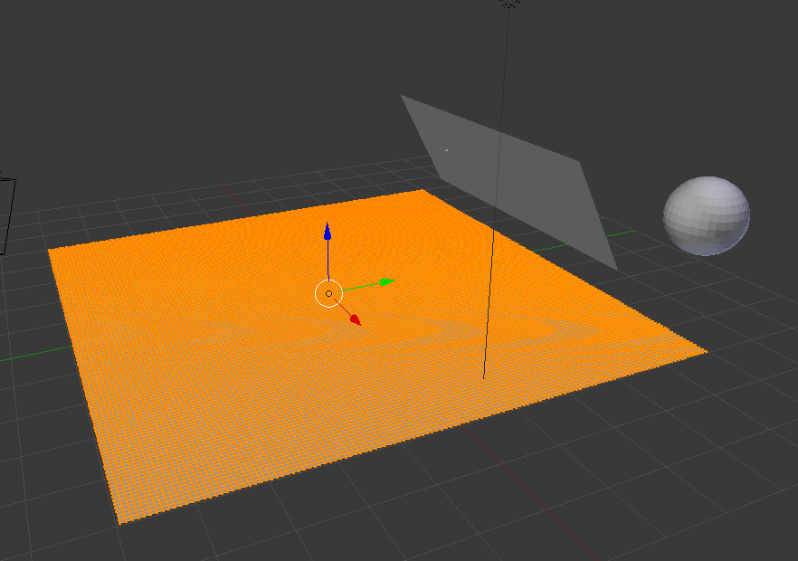2. Configure o plano maior ativando o Dynamic Paint e escolhendo-o como Canvas. Escolha Waves como Surface Type.

3. Crie um sistema de partículas no plano menor. No painel Render defina para modo Object e escolha a Sphere.
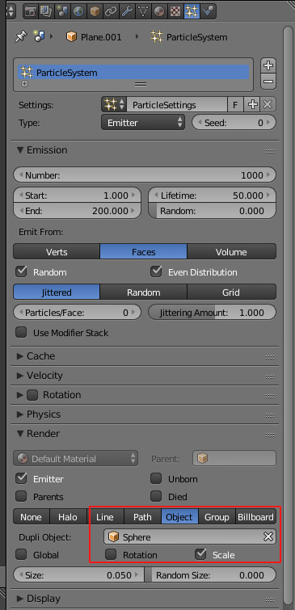4. Configure o plano menor ativando o Dynamic Paint e escolhendo-o como Canvas. Escolha Particle System como Paint Source e selecione o Particle System criado no passo anterior.
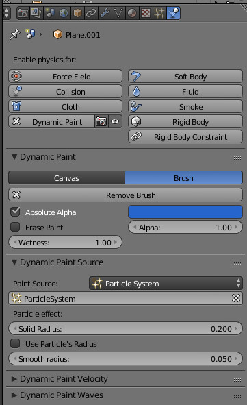5. Clique em Alt+A para ver o efeito.
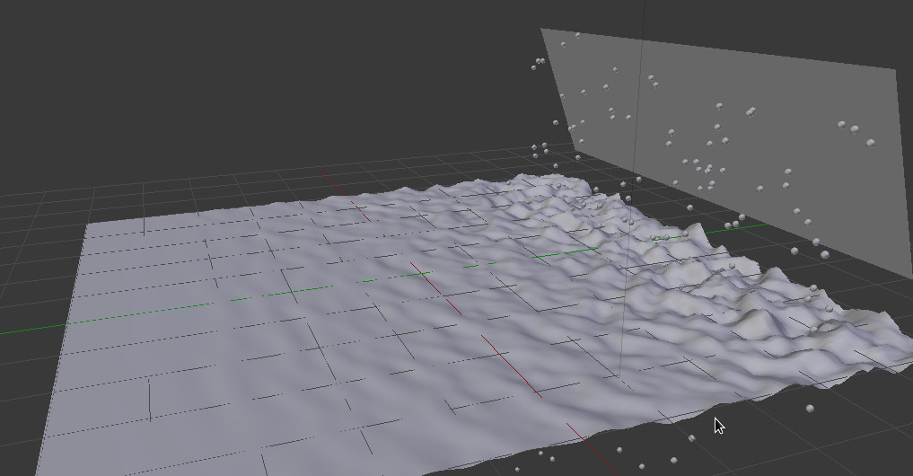Sugestões
- Selecione o plano maior e clique em Shading: Smooth para o aspeto do "líquido" ser menos poligonal.
- Anime com keyframes o plano menor.
Pegada na neve
1. Crie uma cena com 2 objetos: um plano e outro objeto com a aparência de uma sola de uma bota. Subdivida o plano algumas vezes.
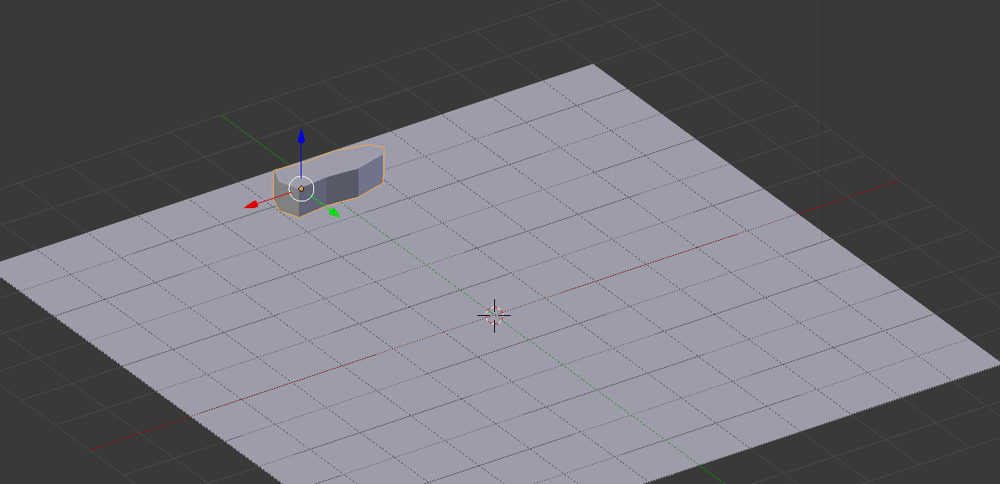2. Posicione a sua bota perto de um dos lados do plano e de forma a atravessar o plano.
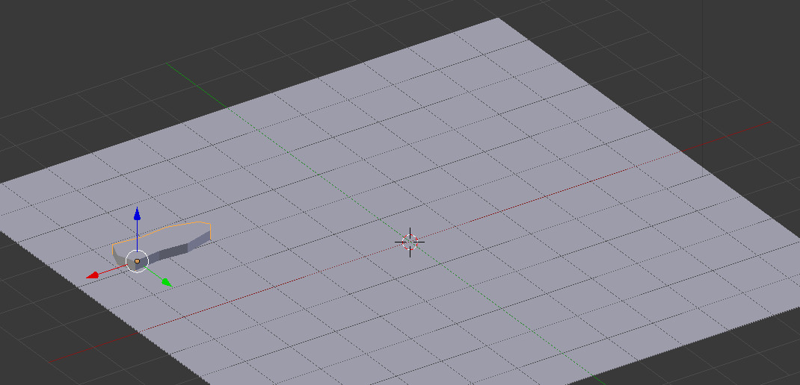3. Introduza 4 keyframes na bota criando uma animação. Movimente a bota na direção do lado oposto do plano e lateralmente de forma alternada. Imagine que está a criar pegadas utilizando a bota.
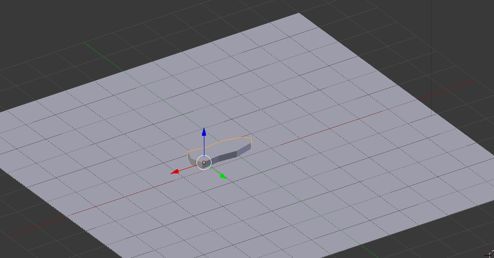4. Se reproduzir a animação, a bota deverá deslizar desenhando um S. No Graph Editor, selecione os canais que correspondem às keyframes.
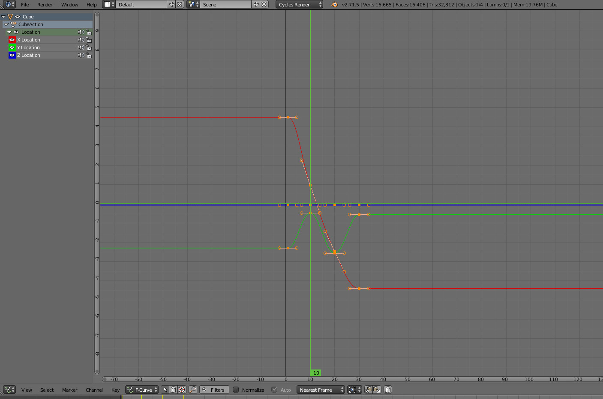Escolha uma interpolação de tipo Constant. Se reproduzir agora a animação, a bota deverá "saltar" para os locais onde inseriu as keyframes.
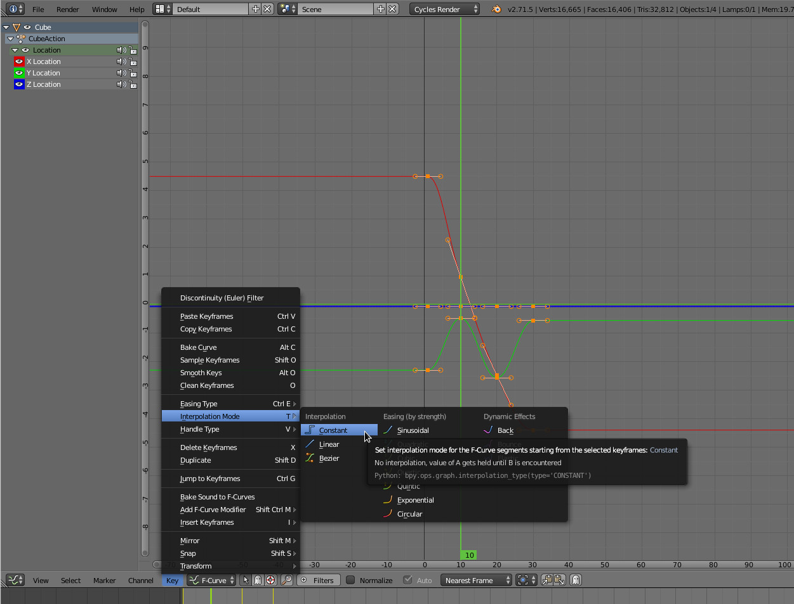 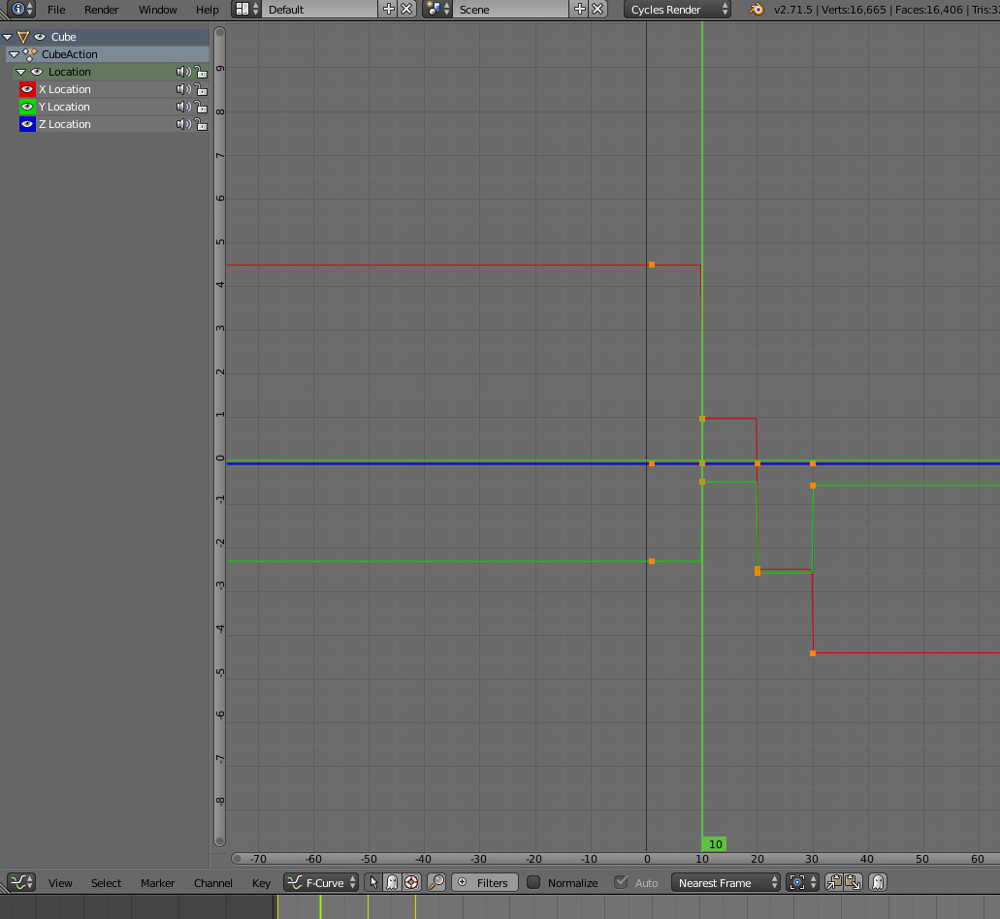5. Selecione o plano, ative o Dynamic Paint e escolha-o como Canvas. Escolha Displace como Surface Type. Se quiser que os "buracos/pegadas" desapareçam com o tempo, ative a opção Dissolve.
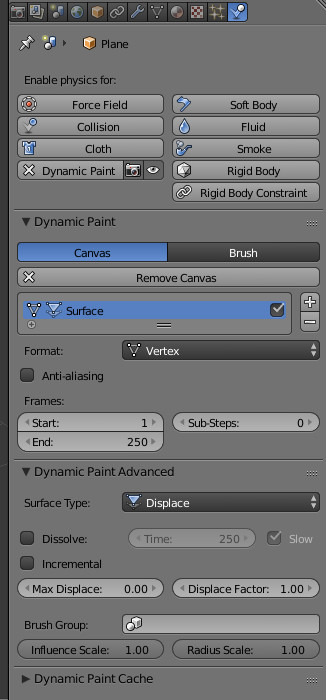6. Selecione a bota, ative o Dynamic Paint e escolha-o como Brush.
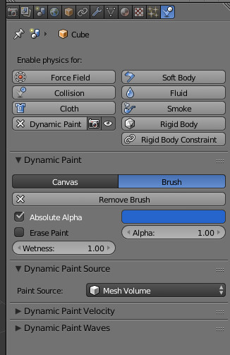7. Se fizer Alt+A deverá agora ver a bota a mover-se deixando pegadas atrás de si.
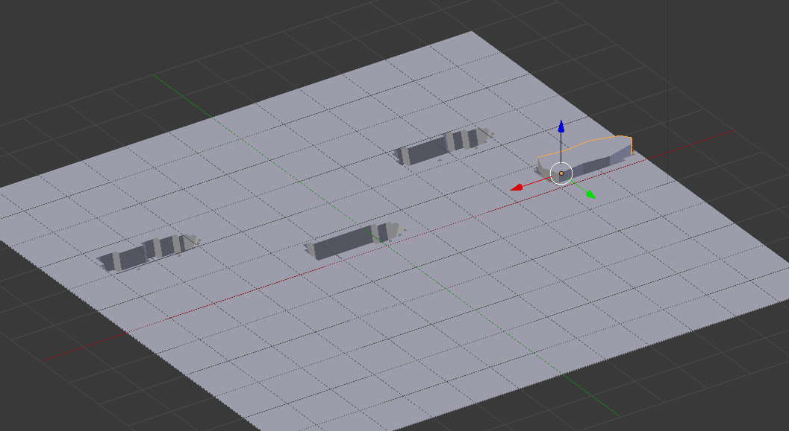Sugestões
Aplique um Smooth Shading no plano para melhorar o aspeto.
No editor Outliner, desative a renderização (ícone é uma câmara fotográfica) e a visualização no 3D View (ícone é um olho) no objeto que serve de bota. Deste modo, só a animação das pegadas...
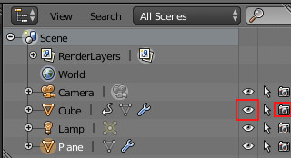